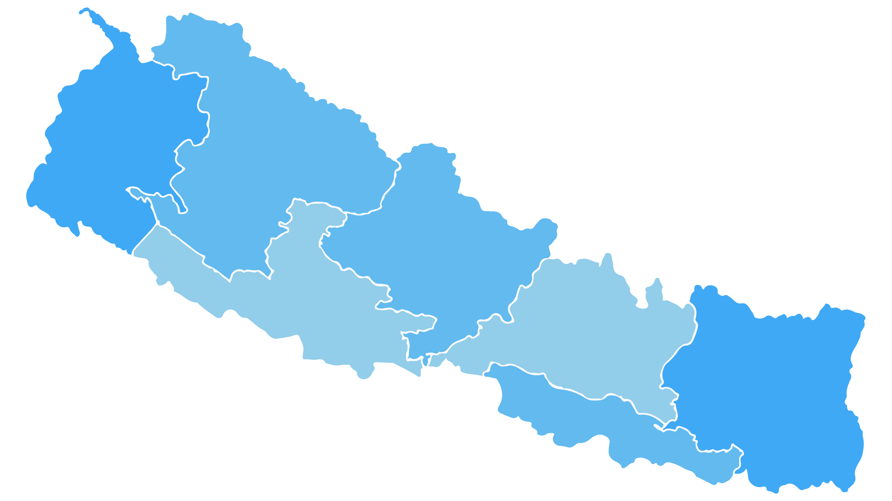
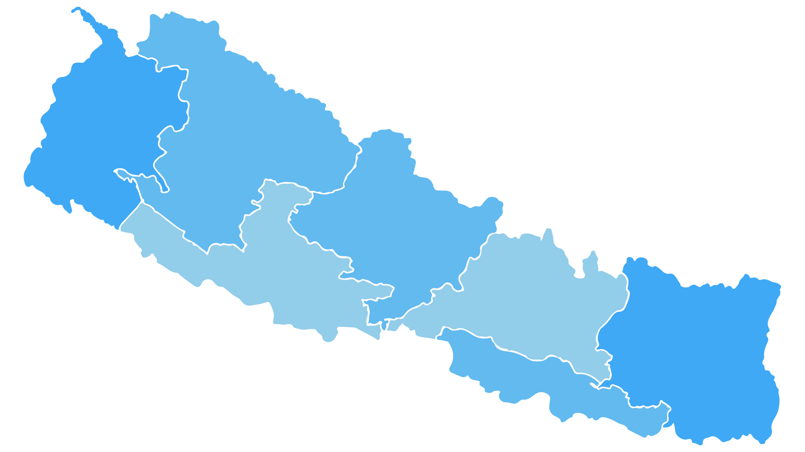

NEPAL

 

Schedule 4 of the Constitution of Nepal divided Nepal into 7 Provinces on 20th September 2015. At that time, there were 75 districts in Nepal. Eventually, the Government decided to divide Rukum and Nawalparasi into two districts each on April 26 2017. Now there is a total of 77 districts in Nepal.
- Province No. 1
- Bhojpur
- Dhankuta
- Ilam
- Jhapa
- Khotang
- Morang
- Okhaldhunga
- Panchthar
- Sankhuwasabha
- Solukhumbu
- Sunsari
- Taplejung
- Terhathum
- Udayapur
- Madhesh Province(Province No. 2)
- Bara
- Dhanusa
- Mahottari
- Parsa
- Rautahat
- Saptari
- Sarlahi
- Siraha
- Bagmati Province (Province no. 3)
- Bhaktapur
- Chitwan
- Dhading
- Dolakha
- Kathmandu
- Kavrepalanchok
- Lalitpur
- Makawanpur
- Nuwakot
- Ramechhap
- Rasuwa
- Sindhuli
- Sindhupalchok
- Gandaki Province (Province no. 4)
- Baglung
- Gorkha
- Kaski
- Lamjung
- Manang
- Mustang
- Myagdi
- Nawalparasi (Bardaghat Susta Purva)
- Parbat
- Syangja
- Tanahu
- Lumbini Province (Province no. 5)
- Arghakhanchi
- Banke
- Bardiya
- Dang
- Gulmi
- Kapilvastu
- Nawalparasi (Bardaghat Susta Paschim)
- Palpa
- Pyuthan
- Rolpa
- Purbi Rukum
- Rupandehi
- Karnali Province (Province no. 6)
- Dailekh District
- Dolpa District
- Humla District
- Jajarkot District
- Jumla District
- Kalikot District
- Mugu District
- Rukum Paschim District
- Salyan District
- Surkhet District
- Sudur-Paschim Province (Province no. 7)
- Achham
- Baitadi
- Bajhang
- Bajura
- Dadeldhura
- Darchula
- Doti
- Kailali
- Kanchanpur